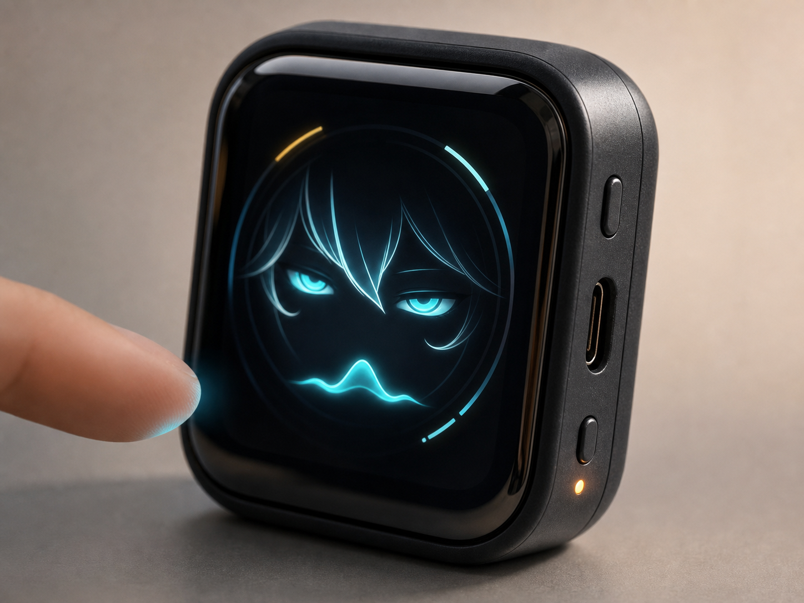
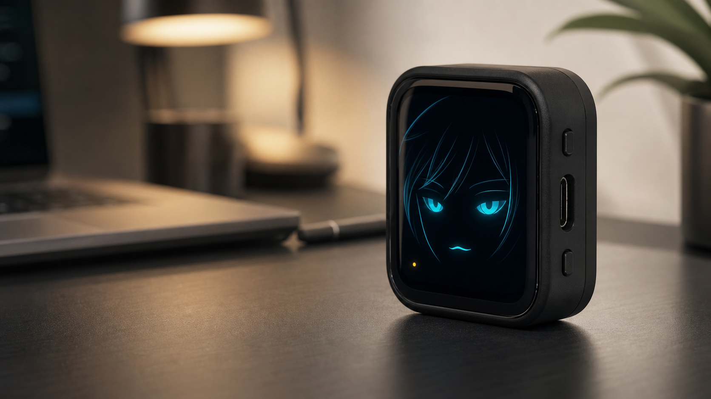
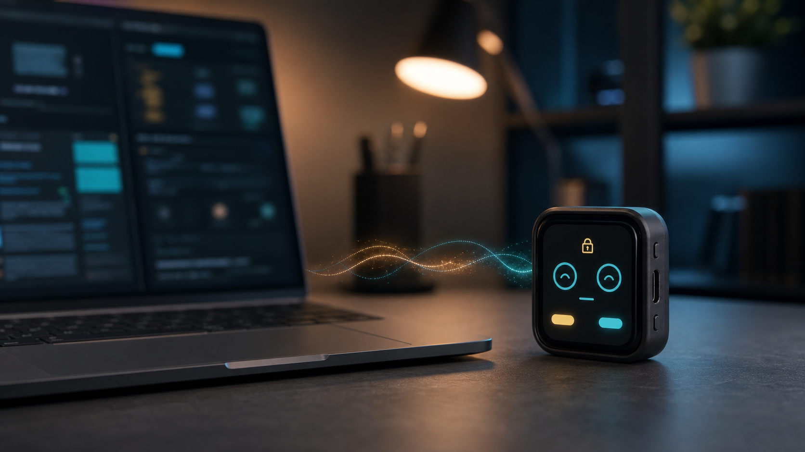

角色感缺失
很多 AI 助手已经很强，但大多停留在聊天框里。用户能调用能力，却很难建立稳定的人设感、记忆感和陪伴关系。
Kira(零) 是一款基于 ESP32-S3 与 1.8 寸 AMOLED 触摸屏的桌面 AI 伙伴。 它以语音交互为主，用表情动画、触摸反馈和状态提醒建立角色感，并通过 Buddy/Pet 扩展桌面 AI 状态感知能力。
核心用户是喜欢 AI 角色、桌面硬件、二次元陪伴和 AI 工具的人。他们需要的不是一个偶尔打开的对话窗口，而是一个能长期待在桌面、能表达状态、也能提醒关键节点的 AI 角色。
很多 AI 助手已经很强，但大多停留在聊天框里。用户能调用能力，却很难建立稳定的人设感、记忆感和陪伴关系。
普通语音终端虽然能说能听，但常常没有鲜明的视觉反馈，也无法让用户“看见”角色正在思考、提醒或等待回应。
当用户切走窗口后，桌面 AI 的运行、等待权限确认、最近消息等状态很容易被错过，这正是角色硬件可以补上的体验断层。
设备不是抽象概念，而是明确落在 ESP32-S3 与 1.8 寸 AMOLED 触摸屏之上的实体载体。它通过语音、触摸、状态灯和表情动画，把角色感落成可以被感知的交互体验。

高冷、思考、提醒、开心、待机等情绪不再只存在于设定里，而是通过小屏幕上的状态和动画被持续表达出来，让角色真正“站住”。
因为它把 语音对话、可见的情绪反馈 和 桌面长期在线 组合在一起，用户感受到的是一个会回应的伙伴，而不是一次性的功能调用。
页面不再直接使用原始参考图，而是用统一生成的产品概念图表达三个重点：桌面存在感、角色表情、以及 Buddy/Pet 状态同步。事实内容仍保留在可编辑 HTML 文案中，避免把关键说明烘焙进图片。


Buddy/Pet 的亮点不在于“多一个功能点”，而在于让 Kira(零) 获得外部状态感知能力。它可以把桌面 AI 的运行中、等待权限、最近消息等信息，通过角色化反馈传达到硬件端。
方向是在硬件侧迁移 Buddy 类设备的 BLE 连接、状态显示与触摸反馈能力；在软件侧尽量兼容现有 Buddy / Bridge 的状态与权限消息，降低接入现有桌面 AI 交互链路的门槛。
Kira(零) 的主要入口仍是语音与触摸，Buddy/Pet 作为特殊能力扩展桌面 AI 的外部感知。这样既不偏离语音硬件主链路，也能在软硬件实现层面形成区隔。
通过语音和 Kira(零)交流，设备用屏幕表情显示聆听、思考和回应状态。
当桌面 AI 运行任务或等待工具权限时，状态被转成轻量消息。
Buddy/Pet 扩展层把运行、权限、消息等状态传到 ESP32-S3 设备。
Kira(零) 通过屏幕、触摸或语音反馈提醒用户，不再让关键节点淹没在窗口里。
Kira(零) 把浅情绪陪伴、新型硬件交互体验和桌面 AI 状态感知连在一起。它既保留了语音硬件的实用性，也试图让 AI 从“工具界面”变成一种能被感知、能被等待、能形成关系的实体存在。
用户不必打开某个窗口，才能想起 AI 在工作。Kira(零) 本身就能作为桌面上的一个持续角色，用屏幕表情和提醒把 AI 的状态显化出来。
语音只是基础，表情、动画、亮起的屏幕和状态变化，才让它更接近“在场的角色”，而不只是一个回答问题的接口。
为了让展示更清楚，这里把项目基础与创意扩展分开说明，避免把规划方向误写成已经完整落地的现成功能。